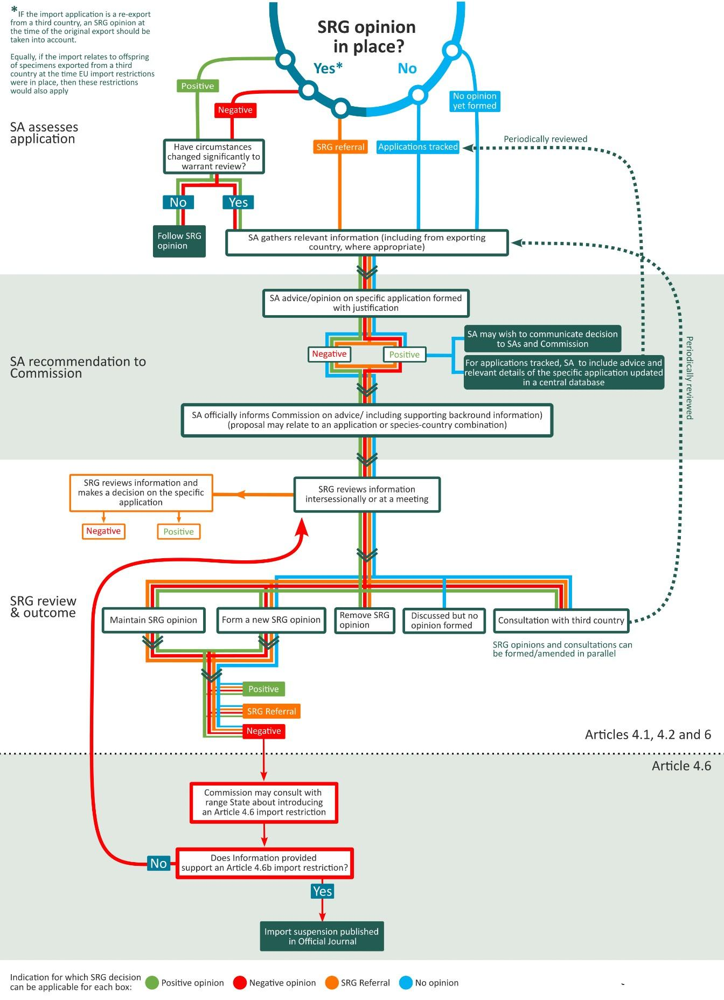

Scientific Authorities and Scientific Review Group -
Guidelines on their designation, duties and tasks under
Regulation (EC) No 338/97 and Regulation (EC) No 865/20061
1. Establishment and mandate
| REGULATION (EC) No 338/97 | |
|---|---|
| ESTABLISHMENT | |
| Article | Duty |
| Article 13.2 | Each Member State shall designate of one or more SA with appropriate qualifications whose duties are separate from those of any designated management authority. |
| Article 17.1 | SRG established consisting of representatives of each Member State's scientific authority or authorities and chaired by the Commission. |
| Article 17.2 (a) | SRG shall examine any scientific question relating to the application of the Regulation - in particular Arts 4.1(a), 4.2(a) and 4.6 - raised by the chairman either on his own initiative or at the request of the members of the SRG or the Committee. |
| Article 17.2(b) | Commission to convey the opinions of the SRG to the Committee. |
2. Import and export permit criteria
| IMPORT/EXPORT PERMITS | ||
|---|---|---|
| Article | Duty | Relevant considerations |
| ANNEX A-IMPORTS | ||
| Article 4.1(a)(i) | The competent SA, after considering any opinion by the SRG, has advised that the introduction into the Community would not have a harmful effect on the conservation status of the species or on the extent of the territory occupied by the relevant population of the species. | Attachment A |
| Article 4.1(a)(ii) | The competent SA, after considering any opinion of the SRG, has advised that the introduction into the EU is taking place for:
| Attachment B |
| Article 4.1(c) | The competent SA is satisfied that the intended accommodation for a live specimen at the place of destination is adequately equipped to conserve and care for it properly. | Attachment C |
| Article 4.1(e) | The management authority (MA) is satisfied, following consultation with the competent SA, that there are no other factors relating to the conservation of the species which militate against issuance of the import permit. | Attachment D |
| Article 6 | When a Member State rejects an application for a permit or certificate referred to in Articles 4, 5 and 10, in a case of significance in respect of the objectives of Regulation (EC) No 338/97, it shall immediately inform the Commission of the rejection and of the reasons for it. | Attachment A |
| ANNEX B-IMPORTS | ||
| Article 4.2(a) | The competent SA, after examining available data and considering any opinions from the SRG, is of the opinion that the introduction into the EU would not have a harmful effect on the conservation status of the species or on the extent of the territory occupied by the relevant population of the species, taking account of current or expected levels of trade. | Attachment A |
| Article 4.2 (c) | The competent SA is satisfied that there are no other factors relating to the conservation of the species which militate against issuance of the import permit. | Attachment D |
| Article 6 | When a Member State rejects an application for a permit or certificate referred to in Articles 4, 5 and 10, in a case of significance in respect of the objectives of Regulation (EC) No 338/97, it shall immediately inform the Commission of the rejection and of the reasons for it. | Attachment A |
| ANNEX A-EXPORTS | ||
| Article 5.2 (a) | The competent SA has advised, in writing, that the capture or collection of the specimens in the wild or their export will not have a harmful effect on the conservation status of the species or on the extent of the territory occupied by the relevant population of the species. | Attachment A |
| Article 5.2 (d) | The MA is satisfied, following consultation with the competent SA that there are no other factors relating to the conservation of the species which militate against issuance of the export permit. | Attachment D |
| Article 6 | When a Member State rejects an application for a permit or certificate referred to in Articles 4, 5 and 10, in a case of significance in respect of the objectives of Regulation (EC) No 338/97, it shall immediately inform the Commission of the rejection and of the reasons for it. | Attachment A |
| ANNEX B-EXPORTS | ||
| Article 5.4 | The competent SA has advised, in writing, that the capture or collection of the specimens in the wild or their export will not have a harmful effect on the conservation status of the species or on the extent of the territory occupied by the relevant population of the species. | Attachment A |
| Article 5.3 | The MA is satisfied, following consultation with the competent SA that there are no other factors relating to the conservation of the species which militate against issuance of the export permit. | Attachment D |
| Article 6 | When a Member State rejects an application for a permit or certificate referred to in Articles 4, 5 and 10, in a case of significance in respect of the objectives of Regulation (EC) No 338/97, it shall immediately inform the Commission of the rejection and of the reasons for it. | Attachment A |
| ANNEX C-EXPORTS | ||
| Article 5.4 | The MA is satisfied, following consultation with the competent SA, that the capture or collection of the specimens in the wild or their export will not have a harmful effect on the conservation status of the species or on the extent of the territory occupied by the relevant population of the species. | Attachment A |
| Article 5.3 | The MA is satisfied, following consultation with the competent SA that there are no other factors relating to the conservation of the species which militate against issuance of the export permit. | Attachment D |
| ANNEX A-RE-EXPORT | ||
| Article 5.3 | The MA is satisfied, following consultation with the competent SA that there are no other factors relating to the conservation of the species which militate against issuance of the export certificate. | Attachment D |
| ANNEX B-RE-EXPORT | ||
| Article 5.4 | The MA is satisfied, following consultation with the competent SA that there are no other factors relating to the conservation of the species which militate against issuance of the export certificate. | Attachment D |
| ANNEX C-RE-EXPORT | ||
| Article 5.4 | The MA is satisfied, following consultation with the competent SA that there are no other factors relating to the conservation of the species which militate against issuance of the export certificate. | Attachment D |
| INTRA-EU MOVEMENT OF ANNEX A LIVE SPECIMENS | ||
|---|---|---|
| Article | Duty | Relevant considerations |
| Article 9.2 (b) | The competent SA at the place of destination shall be satisfied that the intended accommodation for a live specimen (of animal or plant) of:
is adequately equipped to conserve and care for it properly. An opinion is given to the Management Authority of the Member State in which the specimen is located before the movement (i.e. the authority that received the application for issuing a certificate for movement of live specimen). | Derogation of article 7.1 (a) of Regulation 338/97; Criteria in Article 54 and 56 of Regulation 865/2006; Attachment C |
3. Confiscations
| CONFISCATIONS | ||
|---|---|---|
| Article | Duty | Relevant considerations |
| Article 16.3 (a) | The competent authority of the Member state of confiscation, following consultation with a SA shall place or otherwise dispose of the specimen under conditions which it deems to be appropriate and consistent with the purposes and provisions of the Convention and this Regulation | Attachment J |
4. Commission import restrictions (Article 4.6)
| SRG VIEW ON PROPOSED COMMISSION IMPORT RESTRICTIONS | ||
|---|---|---|
| Article | Duty | Relevant considerations |
| ANNEX A-IMPORTS | ||
| Article 4.6 (a) | In consultation with the countries of origin concerned, and taking account of any opinion from the SRG, the Commission may establish general restrictions, or restrictions relating to certain countries of origin, because the introduction into the EU would have a harmful effect on the conservation status of the species or on the extent of the territory occupied by the relevant population of the species. | Attachment A |
| Article 4.6 (a) | In consultation with the countries of origin concerned, and taking account of any opinion from the SRG, the Commission may establish general restrictions, or restrictions relating to certain countries of origin, because there are other factors relating to the conservation of the species which militate against issuance of the import permit. | Attachment D |
| ANNEX B-IMPORTS | ||
| Article 4.6 (b) | In consultation with the countries of origin concerned, and taking account of any opinion from the SRG, the Commission may establish general restrictions, or restrictions relating to certain countries of origin, because the introduction into the EU would have a harmful effect on the conservation status of the species or on the extent of the territory occupied by the relevant population of the species, taking account of current or expected levels of trade. | Attachment A |
| Article 4.6 (b) | In consultation with the countries of origin concerned, and taking account of any opinion from the SRG, the Commission may establish general restrictions, or restrictions relating to certain countries of origin, because there are other factors relating to the conservation of the species which militate against issuance of the import permit. | Attachment D |
| Article 4.6 (c) | In consultation with the countries of origin concerned, and taking account of any opinion from the SRG, the Commission may establish general restrictions, or restrictions relating to certain countries of origin, on live specimens because the species concerned has a high mortality rate during shipment or for which it has been established that they are unlikely to survive in captivity for a considerable proportion of their potential life span. | Attachment E |
| ANY SPECIES-IMPORTS | ||
| Article 4.6 (d) | In consultation with the countries of origin concerned, and taking account of any opinion from the SRG, the Commission may establish general restrictions, or restrictions relating to certain countries of origin, on live specimens because it has been established that their introduction into the EU presents an ecological threat to wild species of fauna and flora. | Attachment F |
| Article 6 | When a Member State rejects an application for a permit or certificate referred to in Articles 4, 5 and 10, in a case of significance in respect of the objectives of Regulation (EC) No 338/97, it shall immediately inform the Commission of the rejection and of the reasons for it. | Attachment A |
5. Other provisions under Regulation (EC) No 865/2006
| Provisions under Commission Regulation (EC) No 865/2006 | ||
|---|---|---|
| Article | Duty | Relevant considerations |
| Article 11.3 | The MA of the Member State in which a specimen is located may, in consultation with the relevant SA, decide to issue transaction-specific certificates where it is considered that there are other factors relating to the conservation of the species that militate against the issuance of a specimen-specific certificate., specifically in relation to:
| Attachment I |
| Article 54 | The SA should advise the MA that a specimen of an animal species is born and bred in captivity, specifically in relation to:
| Criteria in Article 54 of Regulation 865/2006. Attachment G |
| Article 56 | The SA should advise the MA that a given specimen is artificially propagated, specifically in relation to:
| Criteria in Article 56 of Regulation 865/2006 |
| Article 59.2 | The exemption for specimens referred to in Article 8(3)(d) of Regulation (EC) No 338/97 shall be granted only if the applicant has satisfied the competent MA, the latter having consulted a competent SA, specifically in relation to:
| Criteria in Articles 54, 55 and 56 of Regulation 865/2006 |
| Article 59.3 | The exemption for specimens referred to in Article 8(3)(e), (f) and (g) of Regulation (EC) No 338/97 shall be granted only if the applicant has satisfied the competent MA, the latter having consulted with a competent SA, specifically in relation to:
imports of Annex B specimens subject to an Article 4(6) import restriction (Article 71.4(b) EC Regulation 865/2006 | Attachment B |
| Article 60 | A derogation from the prohibition laid down in Article 8(1) thereof may be granted to scientific institutions, approved by a MA in consultation with a SA, by the issue of a certificate covering all specimens in their collection of species listed in Annex A to that Regulation, that are intended for captive breeding or artificial propagation from which conservation benefits will accrue to the species, or for research or education aimed at the preservation or conservation of the species. | Attachment H |
| Article 70 | Any draft amendments to Annexes B or D to Regulation (EC) No 338/97 pursuant to Article 3(2)(c) or (d), or Article 3(4)(a) of that Regulation shall be submitted by the Commission to the SRG, referred to in Article 17 of that Regulation, for advice before they are submitted to the Committee. | Criteria in Article 3 of Regulation 338/97 |
6. Attachment A — Non-detriment findings / SRG opinions
CONTEXT
Advise that introduction into, or export from, the EU would not have a harmful effect on the conservation status of the species or on the extent of the territory occupied by the relevant population of the species.
Article 4.1(a)(i) - Annex A imports
Article 4.2(a) - Annex B imports
Article 5.2 (a) - Annex A exports
Article 5.4 - Annex B exports
Article 4.6 (a) - Annex A Commission import restrictions
Article 4.6 (b) - Annex B Commission import restrictions
In accordance with Articles III and IV of the Convention, export permits for specimens of species included in Appendices I and II shall be granted only when a SA of the State of export has advised that such export will not be detrimental to the survival of the species (following a determination known as a ’non-detriment finding’).
Article III.3.a The import of any specimen of a species included in Appendix I shall require.. a SA of the State of import has advised that the import will be for purposes which are not detrimental to the survival of the species involved.
IV.3 “a SA in each Party shall monitor both the export permits granted by that State for specimens of species included in Appendix II and the actual exports of such specimens. Whenever a SA determines that the export of specimens of any such species should be limited in order to maintain that species throughout its range at a level consistent with its role in the ecosystems in which it occurs and well above the level at which that species might become eligible for inclusion in Appendix I, the SA shall advise the appropriate MA of suitable measures to be taken to limit the grant of export permits for specimens of that species.”
IV.4. The import of any specimen of a species included in Appendix II shall require the prior presentation of either an export permit or a re-export certificate.
Resolution Conf. 16.7 (Rev. CoP17) on Non-detriment findings recommends that a NDF for an Appendix-I or -II species is the result of a science-based assessment that verifies whether a proposed export is detrimental to the survival of that species or not. NDFs should consider whether the species would be maintained throughout its range at a level consistent with its role in the ecosystems in which it occurs.
When making an NDF, SA’s should consider the volume of trade (legal and illegal) relative to the vulnerability of the species (intrinsic and extrinsic factors that increase the risk of extinction of the species) as well as the origin of the species (source code W, X and Y warrant a different approach than source code C, D, A, F or R).
Where Article 8 applies, specimens of species listed in Annex A that have been born and bred in captivity or artificially propagated shall be treated in accordance with the provisions applicable to specimens of species listed in Annex B. (Art 7.1).
The non-detriment finding should be based on proportionate resource assessment methodologies outlined in Resolution Conf. 16.7 (Rev CoP17), which may include, but are not limited to, consideration of:
Species characteristics
life history characteristics
habitat adaptability
migratory/shared populations
risk of mortality after capture and before export (for species where the trade is primarily in live specimens)
Biological and conservation status
abundance
present/past distribution
population structure, status and trend (in harvest area, nationally and internationally)
conservation status (in harvest area, nationally and internationally)
quality of data
genetic status/diversity
Harvest characteristics
types
volumes
segment of population (e.g. age, sex)
trends (historical and current levels and patterns)
data quality
conversion characteristics
(irreversible) effects of the harvest on the habitat
Management regime
aims of management regime
measures currently in place / proposed
adaptive management strategies
levels of compliance
tenure
effectiveness
% harvested vs. effectively protected
Conservation benefits
species/habitat
other conservation benefits
local benefits
other benefits
Threats
- intrinsic and extrinsic factors
Monitoring programmes
population, including monitoring of proxy indicators
off take (including market make-up and demand)
feedback (results are being used to inform and adapt management)
Current or expected anticipated trade levels (imports of Annex B species only)
past trade history
volume of legal and illegal trade (known, inferred, projected, estimated)
existence of any voluntary export quotas set by exporting countries and compliance with these.
predicted or perceived demand in the EU
level of demand for replacement specimens of those species with a poor survival rate in captivity
The sources of information that may be considered when making a non-detriment finding include, but are not limited to:
- relevant scientific literature concerning species biology, life history, distribution and population trends.
- details of any ecological risk assessments conducted.
- scientific surveys conducted at harvest locations and at sites protected from harvest and other impacts.
- management plans of the species for respective harvest areas.
- relevant knowledge and expertise of local and indigenous communities.
- consultations with relevant local, regional and international experts.
- national and international trade information such as that available via the CITES trade database maintained by UNEP-WCMC, publications on trade, local knowledge on trade and investigations of sales at markets or through the Internet for example.
Further reference material is available, but is not limited to:
Scientific Authorities are recommended to consider the information included in the Annex to document AC26/PC20 Doc. 8.4 and any subsequent updates available on the CITES website as reference material when making NDF’s.
International Expert Workshop on CITES Non-Detriment Findings, Cancun, Mexico, November 2008
Workshop on Non-Detriment Findings (NDFs), 04-08 December 2023, Nairobi, Kenia
Reference guide produced by the European Commission and TRAFFIC to the Wildlife Trade Regulations.
Resolution Conf 16.7 encourages Parties to share their non-detriment findings and the methodology that they use. Member States already share documentation to support their opinions and may wish to consider whether they have further material that could be provided to non-EU Parties in support of capacity development.
Wolf, Daniel; Oldfield, Thomasina E.E.; McGough, Noel (2024): A nine-step process to support CITES Scientific Authorities making science-based non-detriment findings (NDFs) for timber/tree species listed in CITES Appendix II: Version 4.0. BfN-Schriften 706. https://doi.org/10.19217/skr706.
Wolf, Daniel; Oldfield, Thomasina E.E.; Schippmann, Uwe; McGough, Noel; Leamann, Danna J. (2025): A nine-step process to support CITES Scientific Authorities making science-based non-detriment findings (NDFs) for species listed in CITES Appendix II: Version 4.0. BfN-Schriften 716. https://doi.org/10.19217/skr716.
CITES electronic Non-Detriment finding portals for sharks and rays (e-NDF) and for sea cucumbers (e-NDF).
SRG opinions and consultation process
The introduction into the EU of Annex A or B species requires that any opinions formed by the SRG are taken into consideration by individual EU Member States (MS) when assessing import applications, unless new information has become available to be taken into consideration, as per Article 4 of Council Regulation (EC) No. 338/97.
For Annex A species, the import permit may be issued only when the competent scientific authority, after considering any opinion by the Scientific Review Group, has advised that the introduction into the Community:
“(i) would not have a harmful effect on the conservation status of the species or on the extent of the territory occupied by the relevant population of the species.
(ii) is taking place:
— for one of the purposes referred to in Article 8(3)
(e) are required under exceptional circumstances for the advancement of science or for essential biomedical purposes),
(f) are intended for breeding or propagation purposes from which conservation benefits will accrue to the species concerned and
(g) are intended for research or education aimed at the preservation or conservation of the species, or
— for other purposes which are not detrimental to the survival of the species concerned.”
For Annex B species, the import permit may be issued only when the competent scientific authority, after examining available data and considering any opinion from the Scientific Review Group, is of the opinion that the introduction into the Community would not have a harmful effect on the conservation status of the species or on the extent of the territory occupied by the relevant population of the species, taking account of the current or anticipated level of trade. This opinion shall be valid for subsequent imports as long as the abovementioned aspects have not changed significantly.
During regular monitoring of species/country combinations or when advising on a particular application, it is the task of the respective SA to decide whether these aspects have significantly changed or not.
There are three formalised types of SRG opinions:
Positive: Based on the available information and given current or anticipated levels of trade, introduction into the EU would not have a harmful effect on the conservation status of the species or on the extent of the territory occupied by the relevant population of the species.
Negative: Based on the available information and given current or anticipated levels of trade, introduction into the EU is likely to have a harmful effect on the conservation status of the species or on the extent of the territory occupied by the relevant population of the species. This type of opinion may be formalized as an import suspension after consultation with the SRG and in line with the appropriate adoption procedure (Suspensions Regulations). A consultation with the relevant range State is undertaken to inform the range state about the reasons of the negative opinion so that the range state has the possibility to take remedial action, which may result in a change of opinion.
SRG Referral: The SRG sees the necessity for a careful and coordinated consideration of import applications among MS as the species is of conservation concern but there is insufficient information for the SRG to be able to form a general positive or negative opinion for this species/country combination, or insufficient clarity among the MS how to evaluate the import concerned with the level of information available. The SRG will assess applications for species under SRG referral received by MS on a case-by-case basis and recommend a specific opinion for each application. The use of this type of opinions should be limited, as far as possible, to species which are only rarely in trade.
SRG opinions generally apply to imports of specimens of a species from a given country or introduction from the sea as specified by that particular opinion. Opinions on imports of specimens of a species from a given country may include specific conditions such as the origin from a specific population, ecosystem, concession, forest management units, etc. and/or further specific conditions such as size or harvest quota restrictions. Therefore, different opinions may apply for imports of specimens of a species from a given country.
If the SRG has not previously formed or is not able to form an opinion (no SRG opinion is in place), the assessment under Article 4 must be exclusively carried out by the SA of the importing MS in the exercise of their legal duties under Council Regulation (EC) 338/97.
The SA may wish to consult with or inform the SRG during the advice process on import applications for a given species / country.
In addition, “when a Member State rejects an application for a permit or certificate in a case of significance in respect of the objectives of this Regulation, it shall immediately inform the Commission of the rejection and of the reasons for rejection.” (Article 6 of Council Regulation (EC) 338/97).
Where no SRG opinion is in place and the Scientific Authority of the Member State that has reviewed an application issued a negative advice, the latter will share this information with the Commission.
To ensure a uniform application of the EU Wildlife Trade Regulations, the following options are possible, depending on the case-by-case assessment by the SA and may also include deviations from current opinions (i.e. the SA of the MS gives a positive advice for a case where a negative opinion is in place or the SA of the MS gives a negative advice for a case where a positive opinion is in place). They apply to cases presented at an SRG meeting as well as to written procedures:
SA informs the Commission about its assessment and the decision on a specific application and the Commission informs the SRG, or
SA informs the Commission about its assessment and asks for a consultation of the SRG on a suggested SRG opinion for a given species country combination
SA asks the Commission to consult the SRG for its view on the SA advice on the specific application prior to decision on the application,
SA asks the Commission to consult the SRG for its view on the SA advice on the specific application and at the same time asks for a consultation on a suggested SRG opinion.
Even if a SA does not request an SRG opinion for a given species/ country combination, another member of the SRG or the Commission can suggest such an opinion, either at an SRG meeting or in writing.
Where no SRG opinion is in place and the SA of a MS that has reviewed an application issued a positive advice, the SA may wish to share their assessment according to the same scenarios as described above.
Whilst decisions on imports for source code F (captive-born), C (captive-bred) or R (Ranched) specimens may require a case-by-case assessment based on the relevant facility, it may be appropriate to form a country-level opinion based on whether the following criteria are met:
- there is a published quota (source code F, C or R),
- details of all the breeding operations contributing to that quota have been provided,
- the off-take level of wild specimens that are introduced into breeding facilities are determined not to be detrimental,
- production levels overall are biologically feasible,
- the founder stock for the facilities concerned were acquired without detriment to the wild population.
The SRG can also issue opinions based on the review of its own opinions (for instance, long standing import suspensions or cases in consultation) or based on CITES recommendations, such as results from Review of Significant Trade in Specimens of Appendix-II species, Resolution Conf. 12.8 (Rev. CoP18). Opinions formed, confirmed, or removed by the SRG are indicated in the short summary of conclusions (SoC) of the SRG.
Tracking
For species/country combinations that are of particular conservation concern but for which there is insufficient information for the SRG to be able to form a positive or negative opinion and where the SRG referral is not feasible due to a high volume of trade, the SRG can decide to track the advices issued by individual Scientific Authorities in support of its role in developing opinions to ensure that the trade level does not have a harmful effect on the conservation of the species or on the extent of the territory occupied by the relevant population of the species. The SAs will include relevant details of the applications and the advice given in a central database/file that is accessible to SRG Members. Such cases are referred to as “Under tracking” in the short summary of conclusions (SoC) of the SRG and in Species +. The information included in the central database/file will be periodically reviewed by the SRG to assess whether any other SRG decision may be appropriate.
Consultations with range States
In some cases, the SRG might require additional information or confirmation from range states to adopt, confirm or change a general opinion. Such cases are referred to as “in consultation” in the short summary of conclusions (SoC) of the SRG and in Species +. In such cases, pending the response from range states, a current positive, or negative or SRG referral opinion for the species/ country combination remains applicable, where appropriate.
If the SRG has not previously formed an opinion (no opinion in place) for a species/country combination “in consultation”, the assessment of respective imports under Article 4 is to be carried out by the SA of the importing MS in the exercise of their legal duties under the Council Regulation (EC) 338/97.
If no sufficient response is received from the range state after one year from the start of the consultation process, the SRG should maintain or proceed with the adoption, the change or the removal of an opinion, considering the precautionary principle.
“In consultation” can also be used for cases where additional information is requested which may not be essential for the current SRG opinion.
Discussed in the SRG
The SRG also keeps record of those taxon / country combinations, which have been discussed, but no opinion has been formed or in case an opinion was in place before and it has neither been confirmed nor was it withdrawn.
Such cases are referred to as “Further taxon / country combinations discussed by the SRG” in the SoC and as “discussed in the SRG” in Species +.
Verification of current opinions
General opinions formed through written procedures are initially communicated by the Commission to the MAs and SAs of all Member States. They are also included in the list of opinions formed at the following SRG meetings and circulated in summary of conclusions after each meeting.
These documents are also available on CIRCABC and in the database maintained by UNEP-WCMC: www.speciesplus.net.
Applicability of opinions
Even if a negative opinion or an SRG referral is in place, imports are possible under certain circumstances: the same applies to suspensions:
Article 7 of Council Regulation (EC) No. 338/97 introduces derogation for cases such as specimens in transit, personal and household goods, and specific transactions between scientific institutions.
Articles 71.2 and 71.4 of Commission Regulation (EC) No. 865/2006 define the circumstances under which import restrictions put in place by the Commission in accordance with the relevant procedure and after taking into account of any opinion from the SRG may not apply.
Further, when it comes to re-exports to the EU, the responsible SA may take into account whether the original export of the specimen concerned to a third country took place before the SRG opinion was adopted and if imports of the same species-country combination were allowable to the EU at that time. In that case, a current negative opinion, or SRG Referral may not apply.
Figure 17: Import permit requests – process for Annex A and B taxa

7. Attachment B — Purpose codes
CONTEXT
Advise on the purposes of the introduction into the EU to ensure that they are either one of those specified in Council Regulation 338/97 or another which is not detrimental to the survival of the species concerned.
Article 4.1(a)(ii) - Annex A imports (source code W)
The purposes of introduction into the EU must be in line with agreed purposes (see Table 17). Under Article 4.1(a)(ii) first indent, the purposes of introduction into the EU must be:
1. The advancement of science, where the species proves to be the only one suitable and where no captive-bred specimens are available (purpose code S or M); or
The following factors should be considered:
The importance of the science concerned, as endorsed (or not) in the scientific field concerned.
The possibility of using alternative species for the objective sought.
The availability of captive bred specimens elsewhere in the world [applicability of this possibility for plants was apparently not considered in Regulation 338/97].
2. Breeding or propagation purposes from which conservation benefits will accrue to the species (purpose code B or G); or
The following factors should be considered as appropriate:
The conservation needs for a captive breeding/artificial propagation project, taking account of similar activities elsewhere in the world and in situ conservation efforts or lack thereof.
The existence of captive/nursery specimens elsewhere in the world which could be used in place of wild-taken ones.
The views of the exporting countries’ Scientific Authority.
The views of the relevant international and national studbook keeper or botanical gardens co-ordinator, where such exists.
The views of the relevant IUCN Species Survival Specialists Group or other experts where such exist and are independent of the applicant.
The presentation of the case in terms of identification of objectives, planning and research prior to importation.
The output of the project in terms of co-operation with others in the field and published material on propagation, breeding, husbandry, and biology.
The applicant’s track record of captive breeding/artificial propagation generally and with the species in question and the long-term viability of the project. Official/institutional support for the project.
Photographic evidence of the breeding/propagation facility, where possible, to back up essential written information.
Existence of any spin-off benefits from removal of specimens from the wild in the range State.
These factors are neither an exhaustive list nor presented in any order of priority and the degree to which any one of them will need to be considered will vary from case to case.
3. Research or education aimed at the preservation or conservation of the species (purpose code S or E); or
The following factors should be considered as appropriate:
The conservation needs for a research or education project, taking account of similar activities elsewhere.
The existence of captive/nursery specimens elsewhere which could be used in place of wild-taken ones.
The views of the exporting countries’ Scientific Authority.
The views of relevant research or education authorities, where such exists.
The views of the relevant IUCN Species Survival Specialists Group or other experts where such exist and are independent of the applicant.
The presentation of the case in terms of identification of objectives and planning.
The output of the project in terms of co-operation with others in the field and published material on research or education.
The applicant’s track record of research or education generally and with the species in question and the long-term viability of the project. Official/institutional support for the project.
Existence of any spin-off benefits from removal of specimens from the wild in the range State.
These factors are neither an exhaustive list nor presented in any order of priority and the degree to which any one of them will need to be considered will vary from case to case.
4. Other purposes which are not detrimental to the conservation of the species
Article 4.1(a)(ii) was not intended to undermine the fundamental principle that trade in specimens of Annex A species must only be authorized in exceptional circumstances. The task of the Scientific Authority is to determine whether the purpose of an import, other than those which are obviously primarily commercial, is detrimental to the survival of the species or not. There are no specific resolutions on the subject and no specific guidance within the Regulation. The import of specimens which form part of personal or household effects as part of a change in residence may also be acceptable in exceptional circumstances (art.7.3).
Some examples of purposes that might meet these conditions are:
a) Hunting trophies (purpose code H)
Trophy hunting is subject to sustainable management that, as appropriate:
Demonstrates the sustainability of harvest levels.
Is based on information on the biology, distribution, status, and trends of the target population(s)
Reviews the sustainability of harvest levels considering illegal activities affecting the target population(s)
Is accompanied by a monitoring system to effectively monitor population status and trends.
Can be adapted according to the needs of the specific population in order to maintain the conservation aims.
Is subject to a robust regulatory framework to the harvesting of trophies.
Produces conservation benefits for the species concerned.
Provides benefits and incentives to local communities who share the area with or are affected by the species concerned.
b) Re-introductions (purpose code N)
The translocation of ‘surplus’ specimens from one wild population to re-stock a population in another country or to restore a species, by re-introduction, to a part of its range from which it has been extirpated. Such programmes should be assessed against the IUCN re-introduction guidelines (https://portals.iucn.org/library/node/10386).
c) Educational (purpose code E)
When no alternatives (e.g., captive bred specimens or similar species) can be used and in exceptional circumstances where such importation produces wider benefits to society (if not covered by paragraph 3 above). For example, an import by a museum for a temporary display on the culture of the Inuit which includes a narwhal carving, or a travelling exhibit of native American Indian artefacts that include headdresses with feathers from Appendix I parrots.
d) Law enforcement (purpose code L)
If such importation produces demonstrable conservation benefits or in exceptional circumstances where such importation produces wider benefits to society, for example, where the nature of the offence or enforcement activity is not directly related to an offence under CITES, e.g. tax evasion or fraud case.
The transaction is for the purpose of transfer of specimens between, or in support of, government agencies for law enforcement, judicial or forensic purposes.
e) Personal (purpose code P)
In exceptional circumstances, e. g. where household effects are being imported under a change of residence regarding a long-term pet that was legally acquired in the country of origin.
Table 17: Treatment of purposes of Annex A import applications (except of captive-bred and artificially propagated specimens)
| Purpose | Treatment | |
|---|---|---|
| B | Breeding in captivity or artificial propagation | Yes, under 1st indent – 8.3.f (conservation benefit required) |
| E | Educational | Yes, under 1st indent – 8.3.g (conservation benefit required) OR under 2nd indent in exceptional circumstances |
| G | Botanical gardens | Yes, under 1st indent – 8.3.f or 8.3.g (conservation benefit required) |
| H | Hunting trophies | Yes, under 2nd indent - if conservation benefit |
| L | Law enforcement/judicial/forensic | Yes, under 2nd indent - if conservation benefit OR in exceptional circumstances |
| M | Medical (including bio-medical research) | Yes, under 1st indent – 8.3.e (exceptional circumstances etc) |
| N | Reintroduction or introduction into the wild | Yes, under 2nd indent - if conservation benefit |
| P | Personal | No, unless under 2nd indent OR in exceptional circumstances where household effects imported under change of residence |
| Q | Circuses and travelling exhibitions | No (Art. 4.1.(d)) |
| S | Scientific | Yes, under 1st indent - 8.3.e (exceptional circumstances etc.), or 8.3.g (conservation benefit required) |
| T | Commercial | No (Art. 4.1.(d)) |
| Z | Zoos | Yes, under 1st indent – 8.3.f or 8.3.g (conservation benefit required) |
8. Attachment C — Accommodation for a live specimen
CONTEXT
Be satisfied that the intended accommodation for a live specimen at the place of destination is adequately equipped to conserve and care for it properly.
Article 4.1(c) - Annex A imports
To be considered:
environmental, nutritional, and behavioural needs of the species
size, design, arrangement, and equipment of the intended accommodation for a live specimen
9. Attachment D — Other factors relating to the conservation
CONTEXT
Be satisfied that there are no other factors relating to the conservation of the species which militate against issuance of the import permit.
Article 4.1(e) - Annex A imports
Article 4.2 (c) - Annex B imports
Article 5.2 (d) - Annex A exports
Article 5.4 - Annexes B and C exports
Article 5.3 - Annex A re-exports
Article 5.4 - Annexes B and C re-exports
Article 4.6 (a) - proposed Commission restrictions on Annex A imports
Article 4.6 (b) - proposed Commission restrictions on Annex B imports
A full list of all conceivable factors would be impossible to compile, but examples are:
recommendations from the CITES Animals-, Plants Committee or CITES Standing Committee
serious concerns about the veracity of statements on the export permit
unbelievable claims relating to the length of time that the specimens are said to have been in a third country prior to re-export.
unrealistic captive-breeding claims and/or discrepancies in details of captive breeding.
10. Attachment E — Restrictions for imports of live specimens
CONTEXT
Comment on Commission proposals to restrict imports of live specimens because the species concerned has a high mortality rate during shipment or for which it has been established that they are unlikely to survive in captivity for a considerable proportion of their potential life span.
Article 4.6 (c) - Annex B imports
In consultation with the countries of origin concerned, in accordance with the regulatory procedure referred to in Article 18(2) and taking account of any opinion from the Scientific Review Group, the Commission may establish general restrictions, or restrictions relating to certain countries of origin, on the introduction into the Community:
(c) of live specimens of species listed in Annex B which have a high mortality rate during shipment or for which it has been established that they are unlikely to survive in captivity for a considerable proportion of their potential life span
Live specimens subject to high mortality during shipment.
Comment on Commission import restriction proposals to respond to and implement recommendations arising from Conference Resolution 10.21 (Transport of live specimens) on 3 d): to examine, when appropriate, any high mortality shipments of live specimens and make recommendations to relevant Parties, exporters, importers and transport companies on how to avoid this in the future.
Evaluate information collected under Article 69.3 of Regulation 865/2006 (With regard to imports of shipments containing live animals, Member States shall, where possible, maintain records of the percentage of specimens of species listed in Annexes A and B to Regulation (EC) No 338/97 which were dead at the time of introduction into the Community.)
Live specimens for which it has been established that they are unlikely to survive in captivity for a considerable proportion of their potential life span.
Comment on Commission import restriction proposals to be made based on:
determination of the potential life span of the species concerned – where this information is available.
comparison of rates of mortality between captive and wild specimens at different stages of their life history – where this information is available.
examination of any available evidence that the species is unlikely to survive in captivity for a considerable proportion of its potential lifespan – if known.
11. Attachment F — Ecological threats
CONTEXT
Comment on Commission proposals for import restrictions on live specimens because it has been established that their introduction into the EU presents an ecological threat to wild species of fauna and flora.
Article 4.6 (d) - species from any Annex
Comment on Commission proposals to be based on examination of the evidence of ecological threat to other native wild species of fauna and flora such as:
evidence about invasive species from other sources e.g., Global Invasive Species Programme (GISP), Bern Convention studies
interactions with native species through predation, competition, parasitisation, hybridisation or as a vector of disease etc.
likelihood of escape or deliberate release
risk of establishment of specimens in the wild and geographical extent of the threat within the EU
impact on animal and plant species of EU interest/species to be subject to special conservation measures (Directive 92/43/EEC, Annexes II and IV and Directive 79/409/EEC Annex I).
likely efficacy of any restrictions adopted.
possible knock-on effects of restrictions established (e.g., replacement species in trade).
12. Attachment G — Specimen born and bred in captivity
CONTEXT
Be satisfied that a specimen of an animal species is born and bred in captivity in accordance with Article 54 of Regulation (EC) No 865/2006 as well as the Commission Guidance document on live animals bred in captivity under the EU Wildlife Trade Regulations (2022/C 306/02)2. Also, Resolution Conf. 12.10 on Registration of operations that breed Appendix-I animal species in captivity for commercial purposes3 should be taken in consideration.
A specimen4 of an animal species shall only be born and bred in captivity when a competent MA in consultation with a competent SA of the Member State concerned is satisfied that:
It is, or is derived from, the offspring, born or otherwise produced in a controlled either of parents that mated or had gametes otherwise transferred in a environment controlled environment5, if reproduction is sexual, or of parents that were in a controlled environment when development of the offspring began, if reproduction is asexual.
The breeding stock6 was established in accordance with the legal provisions applicable to it at the time of acquisition and in a manner not detrimental to the survival of the species concerned in the wild.
The breeding stock is maintained without the introduction of specimens from the wild, except for the occasional addition of animals, eggs, or gametes in accordance with the legal provisions applicable and in a manner not detrimental to the survival of the species concerned in the wild, for the following purpose7 only:
- to prevent or alleviate deleterious inbreeding, the magnitude of such addition being determined by the need for new genetic material.
- to dispose of confiscated animals in accordance with Article 16(3) of Regulation (EC) No. 338/97; or
- exceptionally, for use as breeding stock.
The breeding stock has itself produced second (F2) or subsequent generation offspring in a controlled environment or is managed in a manner4 that has been demonstrated to be capable of reliably producing second generation offspring in a controlled environment.
Captive breeding can have considerable negative impact on the conservation of natural populations in cases where founder breeding stocks have been acquired in an unsustainable, uncontrolled way, or where wild specimens are laundered as captive-bred (and breeding claims are not genuine). Where there are concerns relating to captive breeding, the SRG scrutinizes such claims, and takes appropriate action. Consultations with the Management/Scientific Authority of the country of export relating to captive breeding claims are conducted on two levels:
the Scientific Authority of the Member State of import usually consults on specific cases of import of captive-bred specimens, which may include consideration of specific captive-breeding facilities.8
the European Commission, on behalf of the SRG usually consults on general concerns about the management and monitoring of breeding facilities in the country of export.
Below is a checklist of questions that may be directed to the CITES Authorities of the country of export during consultations relating to captive breeding claims. The checklist should be adapted on a case-by-case basis, and not every question may be applicable in all cases:
Name, address, (website) and founding year of the captive breeding facility / breeder.
Date of first captive breeding and first production of F2 specimens.
Current (breeding) stock (adult males, adult females, and (unsexed) juveniles listed by the month and year of birth).
Clarification on whether wild specimens are regularly added to the breeding stock (how many and how often).
Description of husbandry conditions, breeding and rearing methods, and stock management (clutch/litter size, studbook numbers, individual recognition, separation of adults and juveniles, depending on the taxa concerned, for example also incubation conditions and duration, food, husbandry conditions.)
Details of juveniles born/hatched in the previous five years and annual breeding capacity.
Details of specimens traded in the previous five years listed by year of birth.
Photographs showing aspects of the stock, facility, and reproduction.
Details of mortality rates.
Details of any recent inspections by CITES Authorities (including the date and outcomes)
13. Attachment H — Scientific institutions
CONTEXT
Be satisfied that scientific institutions applying for a certificate exempting Annex A specimens held in their collection from the prohibitions of Article 8(1) are intended for captive breeding or artificial propagation from which conservation benefits will accrue to the species, or for research or education aimed at the preservation or conservation of the species.
Article 60 certificate – Regulation (EC) No 865/2006
The minimum standards expected of scientific institutions holding an article 60 certificate are as follows (based on Res. Conf. 11.15 Rev.CoP18):
collections of animal or plant specimens, and records ancillary to them, permanently housed and professionally curated.
all accessions properly and permanently recorded.
permanent records maintained for loans and transfers to other institutions holding an article 60 certificate.
specimens acquired primarily for purposes of captive-breeding or artificial propagation from which conservation benefits will accrue to the species, or for research aimed at the preservation or conservation of the species that is to be reported in scientific publication, or for purposes of education aimed at the conservation of the species.
live specimens must be housed in accommodation that is adequately equipped to conserve and care for them properly.
museum and herbarium specimens must be prepared, and collections arranged in a manner that ensure their utility.
All live Annex A animal specimens covered by the Article 60 certificate should be permanently marked by means of a uniquely numbered microchip, closed ring, tag tattoo, or be made identifiable by any other reliable measures of identification such as genetics or photo identification, which have been proven reliable in many cases unless this is against veterinary advice, in accordance with Chapter XVI of Regulation (EC) No.865/2006.
acquisition and possession of specimens accord with the laws of the State in which the scientific institution is located; and
the certificate only covers those specimens of species included in Annex A centrally housed under the direct control of the scientific institution and managed in a manner to preclude the use of such specimens for decoration, trophies, or other purposes incompatible with the principles of Article 60.
14. Attachment I — Transaction-specific certificate
CONTEXT
Be satisfied that there are no other factors relating to the conservation of the species that militate against issuance of a specimen-specific certificate, specifically in relation to:
Certificates provided for in Article 8.3 of Regulation (EC) No 338/97 (certificate for commercial use).
The SRG considers the purpose of a transaction-specific certificate (TSC) to assist in enforcement of CITES [and domestic wildlife] legislation, allowing greater scrutiny of commercial activities involving Annex A species of European or global conservation concern. TSC are broadly used in cases where there are no suitable marking methods. TSCs are considered by the Enforcement Group to be a practical tool to assist officers address compliance issues, by offering an audit trail and a starting point for investigations, as well as being a crime prevention measure, deterring the laundering of wild specimens into the system.
The following factors should be taken into consideration in determining which species are likely to benefit from the stricter regulation that a TSC provides:
abundance of a species in captivity. [One interpretation of the above is that a species might not require a TSC if it is so readily available in captivity, due to captive breeding, that the likelihood of specimens being taken illegally from the wild are very small.]
Market demand/value: the level of demand for specimens for a particular species by falconers, breeders, zoological institutions or private keepers and others – some rare species command high prices which may drive illegal trade.
Take from the wild/Trade status (illegal): levels of actual or potential illegal take and/or trade and whether it is having a detrimental impact on the conservation status of the species. [If there is no evidence to suggest that a species has been, or is likely to be, affected by illegal take and/or trade, or there is no evidence to demonstrate that the EU or Member State has been involved (directly or indirectly) in illegal take/trade then there is no obvious benefit from restricting to a TSC. Equally, some level of illegal take may occur which may be inconsequential when set against the size of the population.]
Other domestic controls: e.g., whether the species is a registerable species.
15. Attachment J — Placement or disposal of specimens
CONTEXT
Provide advice to the competent authority on the placement or disposal of confiscated specimens:
Article 16.3 – Regulation (EC) No 338/97
Confiscated specimens shall be placed or otherwise disposed of under conditions which are deemed to be appropriate and consistent with the purposes and provisions of the CITES Convention and Regulation (EC) No 338/97.
Section 7 of the Commission Guidance document on live animals bred in captivity under the EU Wildlife Trade Regulations (2022/C 306/02) provides guidance on handling confiscated specimens and on whether such specimens can be used in a captive-breeding facility2.
The MA is to consult with the competent SA and the decision must achieve the following (based on Resolution Res. Conf. 17.8 (Rev. CoP19)) Disposal of illegally traded and confiscated specimens of CITES-listed species9 to:
maximize conservation value of the specimens without in any way endangering the health, behavioural repertoire, or conservation status of wild or captive populations of the species.
discourage further illegal or irregular trade in the species; and
provide a humane solution, whether this involves maintaining the animals in captivity, returning them to the wild, or employing euthanasia to destroy them.
Factors to be considered:
conservation status (endangered or threatened species: evaluate whether and how these animals might contribute to a conservation programme for the species); and
legal, social, economic, and biological factors.
For the placement or disposal of dead specimens of part and derivatives thereof, the SA may recommend bona fide scientific, educational, enforcement or identification purposes, or the saving in storage, sale, or destruction of specimens whose disposal for these purposes is not practicable.
For live specimens of animals and plants, the SA may recommend one of the following options:
A. Maintenance of the individuals in captivity
Zoos: placement at a zoo can contribute to the captive-bred population of the species included in various breeding programmes and/or to educate the public on the conservation needs of the species.
Rescue centres: established specifically to treat injured or confiscated animals.
Lifetime-care facilities: devoted to the care of confiscated animals.
Specialist societies or clubs: devoted to the study and care of single taxa.
Humane societies: placement with private individuals who can provide humane lifetime care and may contribute to captive-breeding.
Universities and research laboratories: maintain collections of exotic animals for many kinds of research. Transfer to an establishment that conducts research under humane conditions may offer an option, and one which may eventually contribute information relevant to the species’ conservation. In many cases, the lack of known provenance, and the potential that the animal has been exposed to unknown pathogens will make transfer to a research institution an unlikely option.
(High)schools that offer education programs for animal keepers (e.g., to become a zookeeper)
Sale (Annex B, C and D only): parties involved in commercial activities can help offset the costs of confiscation. However, sale should only be considered in certain circumstances, such as where such trade in the species in question does not threaten wild populations of the species and not subject to a legal prohibition on trade and there is no risk of stimulating further illegal trade. Sale to commercial captive breeders may contribute to reducing the demand for wild-caught individuals.
| Maintenance of the individuals in captivity10 | |
|---|---|
| Benefits | Disadvantages |
|
|
B. Returning the individuals in question to some form of life in the wild
Reintroduction: attempt to establish a population in an area that was once part of the range of the species but where it has become extinct.
Reinforcement of an existing population: the addition of individuals to an existing population of the same taxon.
Reinforcement can be a powerful conservation tool when natural populations are diminished by a process which, at least in theory, can be reversed and cannot / will unlikely recover on their own. Such activities are common in many western countries, and specific programmes exist. Reinforcement carries with it the very grave risk that individuals held in captivity, even temporarily, are potential vectors for disease back into a wild population. Reintroduction of specimens for reinforcement purposes also have varying degrees of success and survival of released specimens depending on the locality, species concerned and quality of the programme, which should be taken into consideration before making a decision. Reinforcement should therefore only be employed in instances where there is a direct and measurable conservation benefit (demographically or genetically), as when reinforcement is critical for the viability of the wild population into which an individual is being placed and there is a reasonable likelihood that the released specimens will survive in the wild.
| Returning the individuals in question to some form of life in the wild10 | |
|---|---|
| Benefits | Concerns |
|
|
Any reintroduction or reinforcement activities should be undertaken in line with the relevant IUCN guidelines.
Any return to wild are to be considered by the SA of the country of origin, in case the specimens are confiscated by authorities of the importing or re-exporting country.
C. Euthanasia
In certain cases, authorities confiscating live animals will encounter the following situations:
Return to the wild will not add to the conservation of the species (e.g. very common species), is impossible, or prohibitively expensive.
There are serious concerns that sale will be problematic or controversial, or
During transport, or while held in captivity, the animals have contracted a chronic disease that is incurable and, therefore, a risk to any captive or wild population.
| Euthanasia10 | |
|---|---|
| Benefits | Concerns |
|
|
Further information is available through:
http://ec.europa.eu/environment/cites/pdf/studies/enforcement_trade.pdf (Managing confiscated specimens)
-
Agreed on 22 May 2025 ↩
-
Commission Notice - Guidance document on live animals bred in captivity under the EU Wildlife Trade Regulations 2022/C 306/02: https://eur-lex.europa.eu/legal-content/EN/TXT/PDF/?uri=CELEX:52022XC0811(01) ↩ ↩2
-
https://cites.org/sites/default/files/documents/COP/19/resolution/E-Res-12-10-R15.pdf ↩
-
It is not necessary for a breeder to actually produce second-generation offspring himself but must demonstrate that they are using a breeding method that is known to lead to the production of second-generation offspring. Each application needs to be assessed on its own merits on a case-by-case basis, taking into account the number of individuals in the breeding stock, access to unrelated F1 specimens, genetic management, previous breeding success, sex ratio, age at sexual maturity, species rarity in captivity, etc. ↩ ↩2
-
“A controlled environment” is an environment that is manipulated for the purpose of producing animals of a particular species, that has boundaries designed to prevent animals, eggs or gametes of the species from entering or leaving the controlled environment, and the general characteristics of which may include but are not limited to: artificial housing; waste removal; health care; protection from predators; and artificially supplied food (Res. 10.16) ↩
-
“breeding stock” means all the animals in a breeding operation that are used for reproduction. ↩
-
It should not be possible for a commercial captive breeding operation to import wild-taken specimens of Annex A species as these cannot be imported for primarily commercial purposes. ↩
-
Guidance for the inspection of captive-breeding and ranching facilities as submitted by the CITES Secretariat can be found in AC30 Inf. 25 ↩
-
CITES Resolution Conf. 17.8: Disposal of illegally traded and confiscated specimens of CITES-listed species Resolutions (cites.org) ↩
-
“Non-exhaustive list of potential factors to be considered depending on the individual case.” ↩ ↩2 ↩3